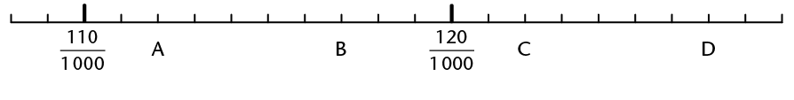

Fractions in decimal notation
In this chapter you will do more work with fractions written in the decimal notation. When fractions are written in the decimal notation, calculations can be done in the same way as for whole numbers. It is important to always keep in mind that the common fraction form, the decimal form and the percentage form are just different ways to represent exactly the same numbers.
Equivalent forms
Fractions in decimal notation
1. What fraction of each rectangle is coloured in? Write your answers in the table.
(a)
(b) 
(c)
(d) 
|
Coloured in |
Fraction notation |
Decimal notation |
|
(a) Red |
|
|
|
(b) Green |
|
|
|
Yellow |
|
|
|
(c) Green |
|
|
|
Yellow |
|
|
|
(d) Yellow |
|
|
|
Green |
|


2. Now find out what fraction in each rectangle in question 1 is not coloured in.
|
Not coloured in |
Fraction notation |
Decimal notation |
|
(a) |
|
|
|
(b) |
|
|
|
(c) |
|
|
|
(d) |
|


Decimal fractions and common fractions are simply different ways of expressing the same number. We call them different notations.
To write a common fraction as a decimal fraction, we must first express the common fraction with a power of ten (10, 100, 1 000 etc.) as denominator.
For example: \(\frac{9}{20}=\frac{9}{20} \times \frac{5}{5} = \frac{45}{100} = 045\)
If you have a calculator, you can also divide the numerator by the denominator to get the decimal form of a fraction, for example: \(\frac{9}{20} = 9 \div 20 = 0,45\)
To write a decimal fraction as a common fraction, we must first express it as a common fraction with a power of ten as denominator and then simplify if necessary.
For example: \( 0,65 = \frac{65}{100} = \frac{65 \div 5}{100 \div 5} = \frac{13}{20}\)
3. Give the decimal form of each of the following numbers.
\(\frac{1}{2} \) __________
\(\frac{3}{4}\) __________
\(\frac{4}{5}\) __________
\(\frac{7}{5}\) __________
\(\frac{7}{2} \) __________
\(\frac{65}{100}\)__________
4. Write the following as decimal fractions.
(a) \(2 \times 10 + 1 \times 1 + \frac{3}{10}\)
(b) \(3 \times 1 + 6 \times \frac{1}{100}\)
(c) Three hundredths
(d) \(7 \times \frac{1}{1000}\)
5. Write each of the following numbers as fractions in their simplest form.
0,2
0,85
0,07
12,04
40,006
6. Write in the decimal notation.
(a) 5 + 12 tenths
(b) 2 + 3 tenths + 17 hundredths
(c) 13 hundredths + 15 thousandths
(d) 7 hundredths + 154 hundredths
Hundredths, percentages and decimals
It is often difficult to compare fractions with different denominators. Fractions with the same denominator are easier to compare. For this and other reasons, fractions are often expressed as hundredths. A fraction expressed as hundredths is called a percentage.
Instead of 6 hundredths we can say 6 per cent or \(\frac{6}{100}\) or 0,06.
6 per cent, \(\frac{6}{100}\) and 0,06 are just three different ways of writing the same number.
The symbol % is used for per cent.
Instead of writing "17 per cent", we may write 17%.
1. Write each of the following in three ways: in decimal notation, in percentage notation and in common fraction notation. Leave your answers in hundredths.
(a) 80 hundredths
(b) 5 hundredths
(c) 60 hundredths
(d) 35 hundredths
2. Complete the following table.
|
Common fraction |
Decimal fraction |
Percentage |
|
|
0,3 |
|
|
\(\frac{1}{4}\) |
||
|
|
15% |
|
|
\(\frac{1}{8}\) |
||
|
|
0,55 |
|
|
|
1% |


Ordering and comparing decimal fractions
Bigger, smaller or the same?
1. Write the values of the marked points (A to D) in as accurately as possible in decimal notation. Write the values beneath the letters A to D.
(a)
(b) 
(c)
(d) 
(e) 
(f) 
(g) 
(h)
(i) 
2. Order the following numbers from biggest to smallest. Explain your thinking.
5267 1263 1300 12689 635 1267 125 126 12
3. Order the following numbers from biggest to smallest. Explain your method.
0,8 0,05 0,901 0,15 0,465 0,55 0,75 0,4 0,62
0,901 0,8 0,75 0,62 0,55 0,465 0,4 0,15 0,05
4. Write down three different numbers that are bigger than the first number and smaller than the second number.
(a) 5 and 5,1
(b) 5,1 and 5,11
(c) 5,11 and 5,12
(d) 5,111 and 5,116
(e) 0 and 0,001
(f) \(\frac{1}{2}\) and 1
5. Underline the bigger of the two numbers.
(a) 2,399 and 2,6
(b) 5,604 and 5,64
(c) 0,11 and 0,087
(d) \(\frac{3}{4}\) and 50%
(e) \(\frac{75}{100}\) and \(\frac{50}{100}\)
(f) 0,125 and 0,25
6. The table gives information about two world champion heavyweight boxers. If they fight against one another, who would you expect to have the advantage, and why?
|
Wladimir Klitschko |
Alexander Povetkin |
|
|
Height (m) |
1,98 |
1,88 |
|
Weight (kg) |
112 |
103,3 |
|
Reach (m) |
2,03 |
1,91 |
7. Fill in <, > or = .
(a) 3,09 ☐ 3.9
(b) 3,9 ☐ 3,90
(c) 2,31 ☐ 3,30
(d) 3,197 ☐ 3,2
(e) 4,876 ☐ 5,987
(f) 123,321 ☐ 123,3
8. How many numbers are there between 3,1 and 3,2?
Rounding off decimal fractions
Decimal fractions can be rounded in the same way as whole numbers. They can be rounded to the nearest whole number or to one, two, three etc. figures after the comma.
If the last digit of the number is 5 or bigger it is rounded up to the next number. For example: 13,5 rounded to the nearest whole number is 14; 13,526 rounded to two figures after the comma is 13,53. If the last digit is 4 or less it is rounded down to the previous number. For example: 13,4 rounded to the nearest whole number is 13.
Let's round off
1. Round each of the following numbers off to the nearest whole number.
29,34 3,65 14,452 3,299 39,1 564,85 1,768
2. Round each of the following numbers off to one decimal place.
19,47 421,34 489,99 24,37 6,77
3. Round each of the following numbers off to two decimal places.
8,345 6,632 5,555 34,239 21,899
4. Mr Peters buys a radio for R206,50. The shop allows him to pay it off over six months. How must he pay back the money?
5. (a) Mrs Smith buys a carton of 10 kg grapes at the market for R24,77. She must divide it between herself and two friends. How much does each woman get?
(b) How much must each person pay Mrs Smith for the grapes?
6. Estimate the answers for each of the following by rounding off the numbers.
(a) \(1,43 \times 1,62\)
(b) \(3,89 \times 4,21\)
Calculations with decimal fractions
To add and subtract decimal fractions
- tenths may be added to tenths
- tenths may be subtracted from tenths
- hundredths may be added to hundredths
- hundredths may be subtracted from hundredths etc.
Let's do calculations!
1. Four consecutive stages in a cycling race are
21,4 km; 14,7 km; 31 km and 18,6 km long.
How long is the whole race?
Answer:
2. Calculate.
(a) \( 16,52 + 2,35 \)
(b) \(16,52 + 9,38\)
(c) \(16,52 + 9,78\)
(d) \( 30,08 + 2,9 \)
(e) \(0,042 + 0,103\)
(f) \(9,99 + 0,99\)
3. Calculate.
(a) \( 45,67 - 23,25 \)
(b) \( 45,67 -23,80 \)
(c) \(187,6 - 98,45\)
(d) \( 1,009 - 0,998 \)
(e) \(0,9 - 0,045\)
(f) \(65,7 - 37,6\)
4. The following set of measurements (in cm) was recorded during an experiment:
56,8; 55,4; 78,9; 57,8; 34,2; 67,6; 45,5; 34,5; 64,5; 88
(a) Find the sum of the measurements and round it off to the nearest whole number.
(b) First round off each measurement to the nearest whole number and then find the sum.
(c) Which of your answers in 4(a) and (b) is closest to the actual sum? Explain why.
5. By how much is 0,7 greater than 0,07?
6. The difference between two numbers is 0,75. The bigger number is 18,4. What is the other number?
To multiply fractions written as decimals, convert the fractions to whole numbers by multiplying by powers of 10 (e.g. \(0,3 \times 10 = 3\)), do your calculations with the whole numbers, and then convert back to decimals again.
For example: \(13,1 \times 1,01\)
\(13,1 {\bf\times 10} \times 1,01 {\bf\times 100} = 131 \times 101 = 13 231; 13 231 \div {\bf 10 \div 100} = 13,231\)
When you do division you can first multiply the number and the divisor by the same number to make the working easier.
For example: \(21,7 \div 0,7 = (21,7 {\bf\times 10}) \div (0,7 {\bf\times 10}) = 217 \div 7 = 31\)
7. Calculate each of the following. You may use fraction notation if you wish.
(a) \(0,12 \times 0,3 \)
(b) \( 0,12\times 0,03 \)
(c) \(1,2 \times 0,3\)
(d) \(350 \times 0,043 \)
(e) \( 0,035\times 0,043 \)
(f) \(0,13 \times 0,16\)
(g) \(1,3 \times 1,6 \)
(h) \(0,13 \times 1,6\)
8. \(30,5 \times 1,3 = 39,65\). Use this answer to work out each of the following.
(a) \(3,05 \times 1,3 \)
(b) \( 305 \times1,3 \)
(c) \(0,305 \times 0,13\)
(d) \(305 \times 13 \)
(e) \( 39,65 \div 30,5 \)
(f) \(39,65 \div 0,305\)
(g) \( 39,65 \div 0,13 \)
(h) \(3,965 \div 130\)
9. \( 3,5 \times 4,3 = 15,05\). Use this answer to work out each of the following.
(a) \(3,5 \times 43 \)
(b) \( 0,35 \times43 \)
(c) \(3,5 \times 0,043\)
(d) \(0,35 \times 0,43 \)
(e) \( 15,05\div 0,35 \)
(f) \(15,05 \div 0,043\)
10. Calculate each of the following. You may convert to whole numbers to make it easier.
(a) \( 62,5 \div 2,5 \)
(b) \(6,25 \div 2,5\)
(c) \( 6,25 \div 0,25 \)
(d) \(0,625 \div 2,5\)
Solving problems
1. (a) Divide R44,45 between seven people so that each one receives the same amount.
(b) John saves R15,25 every week. He now has R106,75 saved up. For how many weeks has he been saving?
2. (a) Calculate \(14,5 \div 6\), correct to two decimal places
(b) Calculate \(7,41 \div 5\), correct to one decimal place
3. Determine the value of \(x\). (Give answers rounded to 2 decimal places.)
(a) \( 7,1 \div x = 4,2 \)
(b) \(x \div 0,7 = 6,2\)
(c) \(12 \div x = 6,4\)
(d) \( x \div 3,5 = 7 \)
(e) \(2,3 \times x = 6\)
(f) \(0,023 \times x = 8\)
4. (a) 1 ℓ of water weighs almost 0,995 kg.What will 50 ℓ of water weigh? What will 0,5 ℓ of water weigh?
Mincemeat costs R36,65 per kilogram. What will 3,125 kg mince-meat cost? What will 0,782 kg cost?